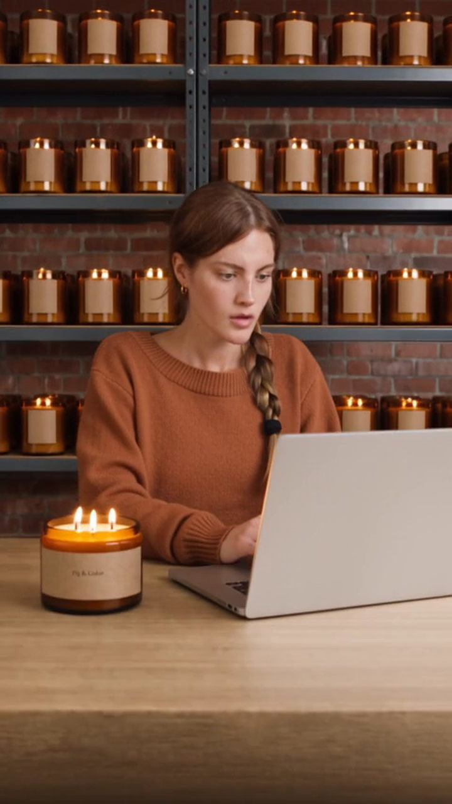
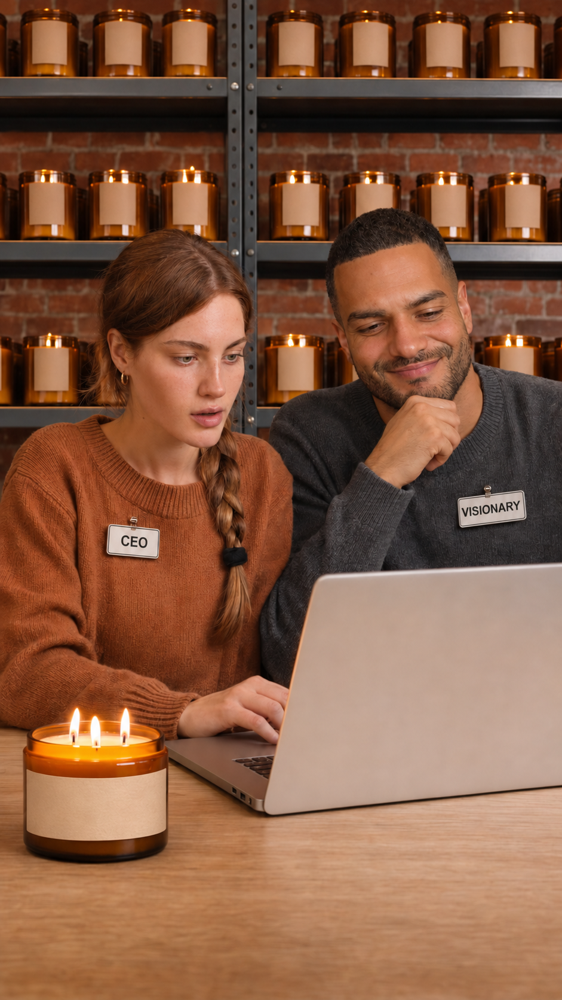
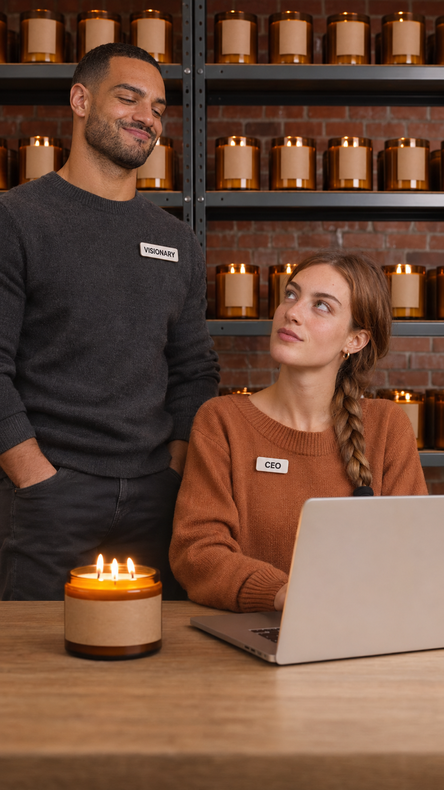
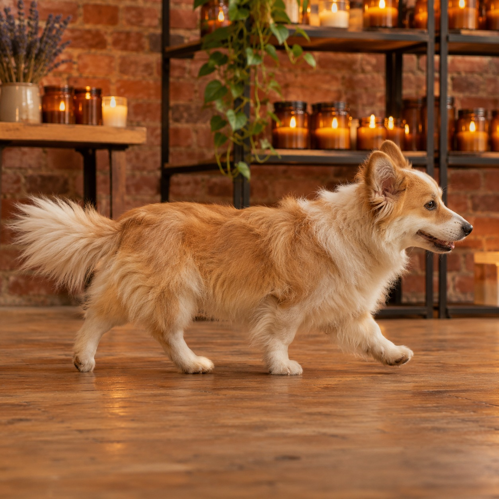
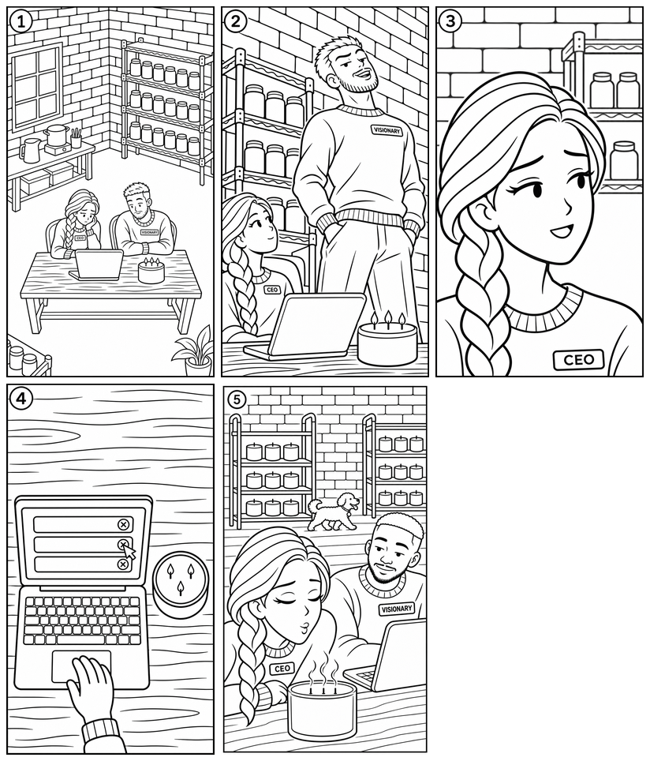
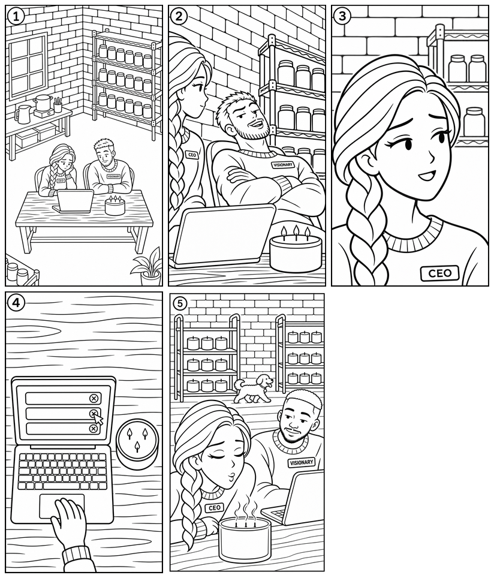
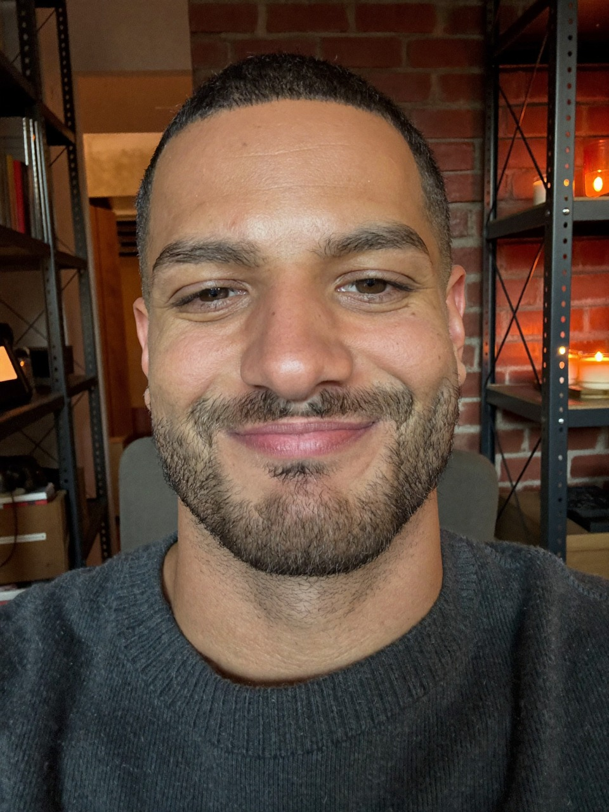
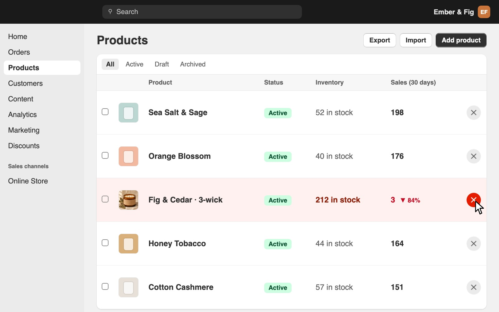

First frame · the intro's last frame
Gives: Studio, the owner at her desk, laptop, the lit Fig & Cedar jar, shelves.
Not: Nothing else.
media 9a9c30e90 · The two finished ads. Pick A or B. Each is the keeper intro (0-15 s) plus one 15 s owner-half take, stitched for free.
1 · The keeper intro (0-15 s), untouched. The owner half below starts from its last frame.
2 · The two of them, with their name tags. Real pin-on badges on their sweaters, CEO and VISIONARY. Subtle: she's a little naive and quietly impressed, he's a bit cocky.



Faces: both are Soul. Owner = Soul 2 (actress 14, job 1963a66d); co-founder = Soul 2 (job 0447bb1c). Both saved as Higgsfield Elements: candle-owner-ceo and candle-cofounder-visionary. (The stills above are GPT Image scene previews built from those Soul faces; Seedance gets the Soul faces themselves.)
3 · Storyboard, two endings. Five different shots: wide from high, low angle on him, close-up on her, overhead on the laptop, table-height close with the dog. Same script; only panel 2 changes.


4 · Voices: locked. Hers is her own voice (Alexandra), his is Mark, as you picked. Full quality (128 kbps, no re-encode).
| Who | Listen | What it is |
|---|---|---|
| Her · own voice | Alexandra (actress 14), timbre reference only, 9.4 s. | |
| Him · Mark | “Yeah, I told you. Customers just aren't into Fig and Cedar.” 4.7 s. |
5 · Music: two new options (no pick needed yet; it goes in the edit, the earlier A and B are below them).
| Option | Listen | What it does |
|---|---|---|
| C · Deadpan | Dry mockumentary: pizzicato, walking bass, brushed snare. Quiet and a little smug. 15 s. | |
| D · Lo-fi swagger | Laid-back R&B groove: Rhodes, mellow bass, relaxed drums. Cool, slightly cocky. 15 s. | |
| A · Build (earlier) | Sparse, then a cocky groove at about 8 s. | |
| B · Steady (earlier) | Upbeat beat from the start. |
Renders: 90 credits (two 15 s takes, one per ending, on your 11:37 PM go). Earlier this round: 4.36 credits (two music samples). Stills, badges, dog, storyboard, voice cuts, Elements: free. Ending A's exact prompt is at the Seedance gate; ending B's prompt is below as the alternative.
Emile's story, Nov 15 1:00 PM ET. His five lines are kept word for word (diffed against STORY.md). No ka-ching, no cart click, no Scout call: she never buys.
Take 5 (Emile, Nov 15 8:06 PM ET): “We're using actress 14's own voice … I feel like the scenes are too much the same … different angle, height … a dog that comes in the scene … they can't be overplaying it … she's CEO, he's visionary … I want to be tags under shirts … two endings … where the guy stands up … and the other one where he's still sitting down … For the voice I pick Mark.”
Take 4 (Emile, Nov 15 7:28 + 7:34 PM ET): “The voices proposed are very AI … I need new voices … The girl should be in almost a sad soft way … He leans back, arm crossed … she should have the tag CEO and the black guy should have the tag visionary.” 7:34 PM: H240 take 2's intro is the keeper; H241 becomes the owner half only, from its last frame.
Take 3 draft (Emile, Nov 15 5:14 PM ET): “Show me the voice of the actor … paint the scene of the two sitting together … she's relaxed, checking. On the other side, they're a little bit more hyped … ‘Damn, what's going on with Fig and Cedar?’ … He's a little bit gangsterish, confident … She's impressed, very impressed … ‘Damn, you just know things’ … I was hoping more for an American voice … high quality.” Built as asked; not gated or rendered until he picks.
Take 2 (Emile, Nov 15 4:25 PM ET, after take 1): “I love everything, specifically how the table flipped … When she lands on the screen … It needs to feel like a real screen … something like she's browsing within that dashboard … scrolling, seeing other products … they're two co-founders … a light-skinned Black guy. He's totally overconfident but … he's wrong … Then the girl's like, ‘I guess you're right.’ She deletes it.” 0-15 s, the blow-out, the lesson line and the end screen are unchanged; the owner side is rebuilt: two co-founders at one desk, a sharp store admin she scrolls (HTML, free), his line, her “I guess you're right.”, the delete. New: his face (one Soul 2 image), his voice file (a library voice, free), storyboard panels 8-10 (free).
Round 2 (Emile, Nov 15 2:35 PM ET, after D's take): “The portion of the owner is not good … there's an overlay of the thing. This is horrendous … that should be on the laptop … You see her clicking X, deleting it from the website, and blowing away the candles … a camera spinning around her … with the laptop as a center point.” The shopper half and the flip (0-15 s) were unchanged; the owner half became five new shots (take 1; replaced in take 2 above).
The idea: she was about to buy and couldn't, because the page never said if it is safe for cats; the owner and her co-founder only see the missing sales and delete the line from their store for the wrong reason.
H241 change (Emile, Nov 15 2:11 PM ET): “the shopper is looking at something she's about to buy. She can't buy it because she doesn't have the information. Surprisingly the owner makes a decision to cut off the product line on the wrong insight.” and “make sure that Fig and Cedar … look and feel different from the one she has at home.” Her apartment now has only white pillar candles and tea lights; the amber three-wick Fig & Cedar jar is only on the product page and in the owner's studio.
| Time · panel | Who | What | Line | Assets |
|---|---|---|---|---|
| 0-3s P1 | Owner, Co-founder | Panel 1. From the intro's last frame the camera rises and pulls back to a wide, high angle: he sits beside her; she rests her chin in her hand, a little sad. Badges CEO / VISIONARY on their sweaters. (Ad 15-18 s.) | Owner (on camera, quiet): “Damn... what's going on with Fig and Cedar?” | @Image1 @Image2 @Image3 @Image4 @Image5 @Image6 @Audio1 |
| 3-6s P2 | Co-founder, Owner | Panel 2. Hard cut, low angle on him. A: he stands up, hands in pockets. B: he stays seated, leaning back, arms crossed. Small cocky half-smile; she looks at him. (18-21 s.) | Co-founder (on camera): “Yeah, I told you. Customers just aren't into Fig and Cedar.” | @Image2 @Image4 @Image3 @Image6 @Audio2 |
| 6-8s P3 | Owner | Panel 3. Hard cut, close-up on her, three-quarter view: a small, quietly impressed smile; CEO badge at the bottom of frame. (21-23 s.) | Owner (on camera): “Damn, you just know things.” | @Image2 @Image3 @Image5 @Audio1 |
| 8-9s P4 | Owner (cursor) | Panel 4. Hard cut, overhead onto the desk: her cursor clicks the red X on Fig & Cedar (212 in stock, 3 sales); the row disappears. (23-24 s.) | — | @Image2 @Image3 @Image8 |
| 9-12s P5 | Owner, Dog | Panel 5. Table-height close shot: she blows out the jar; the wicks smoke while their dog trots across behind the desk. (24-27 s.) | Scout (off screen): “Don't guess why your shoppers don't buy.” | @Image2 @Image3 @Image7 @Audio3 |
| 12-15s — | End screen | Hard cut to the H158 end screen. (27-30 s.) | Scout (off screen): “Scout interviews your shoppers for you. Get free early access.” | @Video1 @Audio3 |
12 uploads plus one prompt (ending A). Only what is in this box is sent.

Gives: Studio, the owner at her desk, laptop, the lit Fig & Cedar jar, shelves.
Not: Nothing else.
media 9a9c30e9Gives: Shot order, camera angles, rough framing.
Not: Its line-art style, white background, panel numbers, drawn faces.
media f085ba75 (B: 6bafbb07)
Gives: Her face, auburn braid, rust sweater.
Not: The background.
media a3488732 · Soul job 1963a66d · Element candle-owner-ceo
Gives: His face, short fade, beard, charcoal sweater.
Not: The background.
media 4f56e950 · Soul job 0447bb1c · Element candle-cofounder-visionaryGives: The pin-on badge she wears on her sweater.
Not: The grey background.
media df9dcae1Gives: The pin-on badge he wears on his sweater.
Not: The grey background.
media 0552c26eGives: The small fluffy dog that trots past once.
Not: The room.
media f7a39e14
Gives: Fig & Cedar 212 in stock, 3 sales, red X with her cursor; only on the laptop screen.
Not: Never as an overlay.
media 03e0d622Gives: Only the last shot's picture.
Not: Its sound, words, pacing.
media 48682b82Gives: Her timbre only.
Not: Its words and pacing.
media 3b148da6Gives: His timbre only.
Not: Its words and pacing.
media 1ff661d8Gives: Scout's timbre only.
Not: Its words and pacing.
media 1040c108【Generation Goal】
Generate the second half of a photoreal story, continuing from the first frame. Earlier, a cat lady wanted the Fig & Cedar candle but left because its page never said whether it is safe for cats. Now the owner and her co-founder see only the missing sales; he confidently, wrongly concludes customers don't want Fig & Cedar, she is quietly impressed, and they delete it from their store. The acting stays subtle and natural, never exaggerated. The two have natural, easy chemistry, warm and unrobotic, with her slightly naive and him slightly cocky on top, never overplayed.
Use @Image1 as the first frame.
This first frame defines the studio, the owner at her desk, her laptop, the lit amber Fig & Cedar jar, the shelves and the camera direction at the start.
【Reference Asset Roles】
@Image2 is a 5-panel storyboard giving the shot order, camera angles and rough compositions; read it left to right, top to bottom; the end screen has no panel; do not adopt its line-art style, white background, panel numbers, drawn faces or drawn room and props; the room, desk and jar come from @Image1.
The owner maps to @Image3; use only her face, auburn side braid and rust knit sweater, not the background.
The co-founder maps to @Image4; use only his face, short fade, beard and charcoal sweater, not the background.
The owner's name badge maps to @Image5; she wears it pinned on her sweater throughout, not the grey background.
The co-founder's name badge maps to @Image6; he wears it pinned on his sweater throughout, not the grey background.
The small dog maps to @Image7; use only the dog, not the room.
The store admin references @Image8, only on the laptop screen, never as an overlay.
The end screen maps to @Video1; use only its picture, not its sound, spoken words or pacing.
@Audio1 gives only the owner's voice timbre, not its words or pacing.
@Audio2 gives only the co-founder's voice timbre, not its words or pacing.
@Audio3 gives only Scout's voice timbre, not its words or pacing.
【Subjects and Relationships】
The owner (@Image3) and her co-founder (@Image4) share the one desk, laptop and lit amber three-wick Fig & Cedar jar from @Image1. Their dog (@Image7) only passes through once.
【Shots】
0-3s · Panel 1 [Starts on the first frame; the camera rises and pulls back to a wide, high angle of the whole desk, revealing the co-founder seated beside her]: The owner (@Image3) rests her chin in her hand, looking at the laptop, a little sad; the co-founder (@Image4) sits relaxed, lips closed. The owner (@Image3), in English, on camera, quietly, almost to herself, in the voice of @Audio1, softly disappointed: {Damn... what's going on with Fig and Cedar?}
3-6s · Panel 2 [Hard cut. Low angle from desk height, looking up at him]: The co-founder (@Image4) stands up from his chair, hands in his pockets, chin slightly up, a small cocky half-smile; the owner (@Image3) looks up at him from her seat, lips closed. The co-founder (@Image4), in English, on camera, lips moving, in the voice of @Audio2, casually sure of himself: {Yeah, I told you. Customers just aren't into Fig and Cedar.}
6-8s · Panel 3 [Hard cut. Close-up on the owner, three-quarter view]: The owner (@Image3) gives a small, quietly impressed smile, eyebrows slightly raised, her name badge at the bottom of the frame. The owner (@Image3), in English, on camera, lips moving, in the voice of @Audio1, softly impressed: {Damn, you just know things.}
8-9s · Panel 4 [Hard cut. Overhead, straight down onto the desk]: Her cursor clicks the red X on the Fig & Cedar row (@Image8) <click>; the row disappears.
9-12s · Panel 5 [Hard cut. Close shot at table height]: The owner (@Image3) leans in and blows out the jar <a soft breath>; the three flames go out and the wicks smoke while the dog (@Image7) trots across the floor behind the desk; the co-founder (@Image4) sits beside her again, lips closed. Scout, in English, off screen, in the voice of @Audio3, calm: {Don't guess why your shoppers don't buy.}
12-15s · End screen [Hard cut, as @Video1]: Scout, in English, off screen, in the voice of @Audio3, warm: {Scout interviews your shoppers for you. Get free early access.} At the end, the end screen holds.
【Style and Sound】
Photoreal, warm studio light as in @Image1. Subtle, natural acting. No music. No ka-ching, no cart sound. No subtitles.
【Maintain Consistency】
Keep the owner (@Image3), the co-founder (@Image4), their sweaters and name badges, the studio, the laptop and the jar as in @Image1.
【Generation Goal】
Generate the second half of a photoreal story, continuing from the first frame. Earlier, a cat lady wanted the Fig & Cedar candle but left because its page never said whether it is safe for cats. Now the owner and her co-founder see only the missing sales; he confidently, wrongly concludes customers don't want Fig & Cedar, she is quietly impressed, and they delete it from their store. The acting stays subtle and natural, never exaggerated. The two have natural, easy chemistry, warm and unrobotic, with her slightly naive and him slightly cocky on top, never overplayed.
Use @Image1 as the first frame.
This first frame defines the studio, the owner at her desk, her laptop, the lit amber Fig & Cedar jar, the shelves and the camera direction at the start.
【Reference Asset Roles】
@Image2 is a 5-panel storyboard giving the shot order, camera angles and rough compositions; read it left to right, top to bottom; the end screen has no panel; do not adopt its line-art style, white background, panel numbers, drawn faces or drawn room and props; the room, desk and jar come from @Image1.
The owner maps to @Image3; use only her face, auburn side braid and rust knit sweater, not the background.
The co-founder maps to @Image4; use only his face, short fade, beard and charcoal sweater, not the background.
The owner's name badge maps to @Image5; she wears it pinned on her sweater throughout, not the grey background.
The co-founder's name badge maps to @Image6; he wears it pinned on his sweater throughout, not the grey background.
The small dog maps to @Image7; use only the dog, not the room.
The store admin references @Image8, only on the laptop screen, never as an overlay.
The end screen maps to @Video1; use only its picture, not its sound, spoken words or pacing.
@Audio1 gives only the owner's voice timbre, not its words or pacing.
@Audio2 gives only the co-founder's voice timbre, not its words or pacing.
@Audio3 gives only Scout's voice timbre, not its words or pacing.
【Subjects and Relationships】
The owner (@Image3) and her co-founder (@Image4) share the one desk, laptop and lit amber three-wick Fig & Cedar jar from @Image1. Their dog (@Image7) only passes through once.
【Shots】
0-3s · Panel 1 [Starts on the first frame; the camera rises and pulls back to a wide, high angle of the whole desk, revealing the co-founder seated beside her]: The owner (@Image3) rests her chin in her hand, looking at the laptop, a little sad; the co-founder (@Image4) sits relaxed, lips closed. The owner (@Image3), in English, on camera, quietly, almost to herself, in the voice of @Audio1, softly disappointed: {Damn... what's going on with Fig and Cedar?}
3-6s · Panel 2 [Hard cut. Low angle from desk height, looking up at him]: The co-founder (@Image4) stays seated and leans back in his chair, arms crossed, chin slightly up, a small cocky half-smile; the owner (@Image3) turns to him, lips closed. The co-founder (@Image4), in English, on camera, lips moving, in the voice of @Audio2, casually sure of himself: {Yeah, I told you. Customers just aren't into Fig and Cedar.}
6-8s · Panel 3 [Hard cut. Close-up on the owner, three-quarter view]: The owner (@Image3) gives a small, quietly impressed smile, eyebrows slightly raised, her name badge at the bottom of the frame. The owner (@Image3), in English, on camera, lips moving, in the voice of @Audio1, softly impressed: {Damn, you just know things.}
8-9s · Panel 4 [Hard cut. Overhead, straight down onto the desk]: Her cursor clicks the red X on the Fig & Cedar row (@Image8) <click>; the row disappears.
9-12s · Panel 5 [Hard cut. Close shot at table height]: The owner (@Image3) leans in and blows out the jar <a soft breath>; the three flames go out and the wicks smoke while the dog (@Image7) trots across the floor behind the desk; the co-founder (@Image4) sits beside her again, lips closed. Scout, in English, off screen, in the voice of @Audio3, calm: {Don't guess why your shoppers don't buy.}
12-15s · End screen [Hard cut, as @Video1]: Scout, in English, off screen, in the voice of @Audio3, warm: {Scout interviews your shoppers for you. Get free early access.} At the end, the end screen holds.
【Style and Sound】
Photoreal, warm studio light as in @Image1. Subtle, natural acting. No music. No ka-ching, no cart sound. No subtitles.
【Maintain Consistency】
Keep the owner (@Image3), the co-founder (@Image4), their sweaters and name badges, the studio, the laptop and the jar as in @Image1.
Same as ending A except Panel 2. Asset list: H241-assets-ending-B.txt (storyboard B 6bafbb07). Prompt file: prompt-ending-B.txt.
P1 0-3 s wide from high (her sad line), P2 3-6 s low angle on him (A stands, B sits), P3 6-8 s close-up on her, P4 8-9 s overhead delete, P5 9-12 s table-height blow-out with the dog passing. End screen 12-15 s, no panel. Ad time = +15 s.
Written our way (351 words), then compiled by the sd25-pe skill into the prompts above.
【Reference Asset Roles】
@Image1 first frame: the keeper intro's last frame (the owner alone at her desk after the High flip).
@Image2 5-panel line-art storyboard (ending A: he stands; ending B: he stays seated): shots and angles only.
@Image3 the owner (Soul 2). @Image4 the co-founder (Soul 2).
@Image5 her CEO name badge, @Image6 his VISIONARY name badge, worn on their sweaters throughout.
@Image7 their small dog, passing through once.
@Image8 the store admin with the red X on Fig & Cedar (212 in stock, 3 sales), only on the laptop screen.
@Video1 end screen picture. @Audio1 her own voice (Alexandra), @Audio2 Mark, @Audio3 Scout: timbre only.
【Generation Goal】
Second half of the cat-candle story from where the intro lands: the owner and her co-founder see only the missing sales; he is sure customers don't want Fig & Cedar, she is quietly impressed, they delete it. Subtle acting, never overplayed.
【Shots】
0-3s: [Panel 1, from the first frame, rise to a wide high angle, revealing him beside her] Chin in hand, a little sad.
Owner (quiet, almost to herself): {Damn... what's going on with Fig and Cedar?}
3-6s: [Panel 2, hard cut, low angle on him] A: he stands up, hands in pockets. B: he stays seated, leaning back, arms crossed. Small cocky half-smile.
Co-founder (casually sure of himself): {Yeah, I told you. Customers just aren't into Fig and Cedar.}
6-8s: [Panel 3, hard cut, close-up on her] A small, quietly impressed smile.
Owner (softly impressed): {Damn, you just know things.}
8-9s: [Panel 4, hard cut, overhead on the desk] Her cursor clicks the red X on Fig & Cedar <click>; the row disappears.
9-12s: [Panel 5, hard cut, table height] She blows out the jar <a soft breath>; the dog trots past behind the desk.
Scout (off screen, calm): {Don't guess why your shoppers don't buy.}
12-15s: [End screen, as @Video1]
Scout (off screen, warm): {Scout interviews your shoppers for you. Get free early access.}
【Style and Sound】
Photoreal, warm studio light as in the first frame. No music in the render (Emile's bed goes in the edit). No subtitles.
Full table with proof lines and the per-shot "one asset per person" table: SD25-CHECK.md. Asset lists: ending A (= H241-assets.txt), ending B. Prompts: ending A (sha256 bab1b27b5b3f4eabf4787d3ee0559d5b4b4f4385064b197a9c55f286d84e8479, = prompt-sd25pe-final.txt), ending B (sha256 9e2c14b4c05c86d3e9b73fd0dbfef62ee3dd8a539492cf630b033230085ac8b6).
Audio transcripts (timbre only, never their words): Audio 1 is her own voice (Alexandra, an earlier stone-fruit line: words not used), Audio 2 is Mark reading his line, Audio 3 is Scout's end line. Video 2's own sound is not used.
Nov 15 8:06 PM, take 5 (this version): Her own voice + Mark; both faces confirmed Soul and saved as Elements; varied angles; subtle acting; real CEO/VISIONARY name badges; a dog; two endings (A gated, B alternative); two new music options. Old page: index.take4.html; old prompt: prompt-sd25pe-final.take4.txt. Spend: 4.36 credits.
Nov 15 7:28 + 7:34 PM, take 4 (take 4): New voices (Eleven v4, 3 each), her solo sad line, CEO/VISIONARY tags both ways, 2 music beds, and the switch to owner-half only from the keeper intro's last frame. Old page: index.take3.html; old prompt: prompt-sd25pe-final.take3.txt. Spend: 8.5 credits.
Nov 15 5:14 PM, take 3 draft (take 3): Emile liked the actor, asked to see the two together and hear the voice (out: not American). New mood switch at the flip, new lines, three voice options, panels 7-10 redrawn free, products-list still dropped. Not gated or rendered. Old page: index.take2.html; old prompt: prompt-sd25pe-final.take2.txt; old board: storyboard.take2.png. Spend: 0.9 credits.
Nov 15 4:25 PM, take 2 (take 2): Emile watched take 1 (job caf0dba8, 90 cr): loved the flip; the screen read as pixels, so the owner side becomes two co-founders at one desk with a real store admin she scrolls, his overconfident line and her “I guess you're right.” before the delete. 0-15 s unchanged (diffed). New: admin stills (HTML, free), his face (Soul 2, 0.12 cr), his voice (library preview, free), panels 8-10 (free). Old page: index.take1.html; old prompt: prompt-sd25pe-final.take1.txt (cleared bbbe6887); old board: storyboard.pre-cofounder.png.
Nov 15 2:35 PM, round 2 (take 1): Emile watched D's take and asked for the owner half rebuilt on every cat-candle render: list only on her laptop, an orbit around her, his two lines with no “I guess”, the X click that deletes Fig & Cedar from her website, then the blow-out. 0-15 s unchanged (diffed). Store admin still added (Image 10, same as D). Panels 8-12 redrawn free. Old page: index.pre-r2.html; old prompt: prompt-sd25pe-final.pre-r2.txt (cleared d394acf7); old board: storyboard.pre-r2.png. Spend: 0 credits.
Nov 15 2:11 PM, H241: Emile's two changes before render: the plot in the goal (about to buy, can't without the cat-safety answer, owner cuts the line on the wrong insight) and the candle contrast (her room = white pillars and tea lights, room still v2; board panels 1, 3-6 redrawn free). Owner face re-uploaded free (old id dead). Old page: index.pre-h241.html; old board: storyboard.pre-h241.png; old prompt: prompt-sd25pe-final.pre-h241.txt. Spend: 0 credits.
Nov 15, cat story: Emile's new story replaces the near-buy story. The storyboard is redrawn for free (GPT Image via Codex), the room is the shared candle apartment, and the Scout orb scene, cart click and ka-ching are gone. The flip-move clip is kept for its camera move only.
Nov 14-15, earlier story: a shopper almost buys, Scout's orb says "Don't guess. Ask them." Codex passed it on Nov 15. Old page: index.pre-catstory.html; old board: storyboard.pre-catstory.png (its 1.0 cr of stills was spent on parent card H216 on Nov 14).